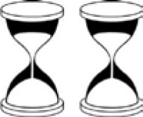

KUM SAATLERİ
Yumurtanızı tam 15 dakika kaynatmak istiyorsunuz. Biri 7, diğeri 11 dakikalık iki kum saati kullanarak bunu nasıl yapabilirsiniz?
Cevap:
Alternatif 1: İki kum saatini aynı anda ters çeviririz. 7 dakikada biri tamamen boşalacaktır ve bu sırada kaynatmaya başlarız. 11 ve 7 arasındaki 4 dakikalık farkla yumurta 4 dakika pişmiş olur. 11 dakikalık kum saatini tekrar başlatırsak yumurtayı 11 + 4 = 15 dakika pişirmiş oluruz.
Alternatif 2: İki saati birden başlatırız. 7 dakikalık olan bitince onu hemen ters çeviririz. 11 dakikalık olan bitince 7 dakikalık olanı tekrar ters çeviririz. 7 dakikalık olan bitince yumurta toplam 15 dakika pişirilmiş olur.
